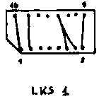

Nascom Journal |
2/80 |
Software-Uhr für z 80 | (Nascom mit NAS-SYS Betriebsystem) |
|
|
Tragen Sie die Uhrzeit, mit der das Programm anlaufen soll in
die Speicherzellen 0D0C bis 0D0E ein (siehe unten). Starten Sie
dann das Programm bei Adresse 0C80. Das Programm ist für 2 Mhz
Systemtakt ausgelegt. Bitte beachten.
Verbesserung für Nascom 1 – Cassetteninterface
Um das Cassetteninterface des Nascom 1 zu verbessern, leistet das oben abgebildete Doppel-T-Filter gute Dienste. Es wird einfach vor den Cas. in Eingang geschaltet.
H. Gundermann, Neulußheim
Einbau des NASPEN-Textverarbeitungssystemes auf den Nascom 2
Folgende Schritte sind auszuführen:
1. Verdrahtung von LKS 1
Beachten Sie, daß in der Dokumentation die Bezeichnungen für BLOCKB und BLOCKA genau vertauscht sind.
2. LSW 1 Schalter 7, 8 nach unten
| 3. EPROMs | Adresse B800 ist IC41 | |
| Adresse BC00 ist IC42 |
|  |
|
Speicherschutz für den Nascom 1
Beim Selbstentwickeln von Software kommt es leider allzu häufig vor, daß sich das Programm selbst zerstört. Vor allem geht dann oft der gesamte Assembler mit dem Source-Code verloren.
Die untenstehende kleine Schaltung blockiert das WR-Signal für alle Speichererweiterungen. Somit besteht die Möglichkeit, das Programm in einen geschützten Bereich zu kopieren und es nach eventuellen Softwarefehlern trotzdem weiter zu benutzen. Zu beachten ist nur, daß der Stack-Pointer am Programmanfang auf einen nicht geschützten Speicherbereich gesetzt werden muß. Der Refresh-Zyklus der dynamischen RAMs wird nicht beeinflußt.

Albert Schunck
| Seite 4 von 16 |
|---|